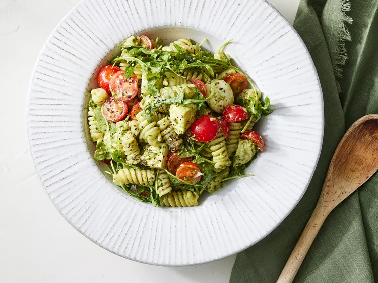

Pesto Pasta Recipe

Delicious Pasta served with Mozzarella and Tomatoes
This pasta is easy to make, easy to cook for families and can be enjoyed for lunch or dinner.
Feel free to add any extra vegetables or a meat such as chicken or chorizo
Ingredients:
- Pasta
- Tomatoes
- Arugula
- Pesto
- Mozzarella
- Mayonnaise
- Lemon Juice
- Seasoning
Optional Ingredients:
- Meats e.g. Chicken or Chorizo
- Bread e.g. Garlic Bread or Ciabatta
- Other Vegetables e.g. Sweetcorn, Peppers or Peas
Steps:
- Cook the pasta and keep some of the pasta water.
- Combine all the ingredients in a bowl.
- Add the reserved water to thin out the pesto.
- Season